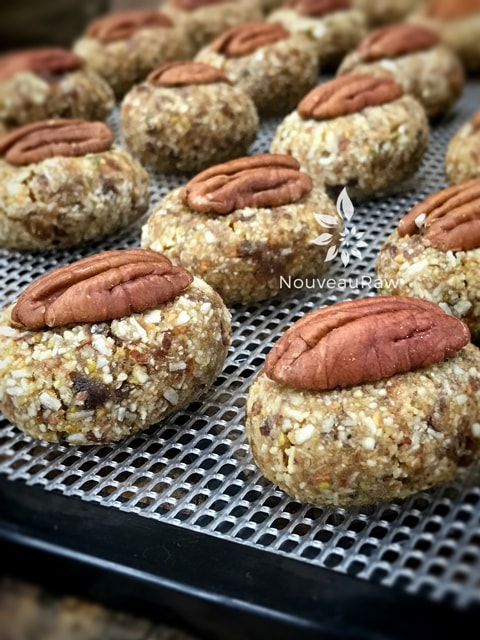

Edible Brain Cookies

~ raw, vegan, gluten-free ~
Edible Brains, yum yum, doesn’t that just get the mouth watering?! These are very fun to serve at Halloween. You can use either whole walnuts or pecans for the “brains”, they both look a little… brainy. :)
These cookies don’t require any dehydration or baking. They are chewy, rich in flavor, filling, full of whole food nutrients, and won’t leave you feeling guilty for indulging in a few.
Speaking of Brain Food
According to BrainHQ, “Walnuts are the top nut for brain health. They have a significantly high concentration of DHA, a type of Omega-3 fatty acid. Among other things, DHA has been shown to protect brain health in newborns, improve cognitive performance in adults, and prevent or ameliorate age-related cognitive decline.
One study even shows that mothers who get enough DHA have smarter kids. Just a quarter cup of walnuts provides nearly 100% of the recommended daily intake of DHA.”
For a serving suggestion, arrange the little brain cookies on serving tray In front of them create small paper tents with funny little names on them such as: Intell E Gent, Albert Mindstein, Sir Thinks-A-Lot, Smart T. Pants, Dr. Ivana Brane, Dr. Anita Neujob, Dr. Ima Klutz, Dr. Guy N Cologist, Al Gore and Dr. I.M. Wright. Do you have any other creative names?
They are delicious, healthy, and add a fun flair to any Halloween spread. I hope you enjoy the simplicity of this recipe. Be sure to comment below. Blessings, amie sue
Yields 36 / 1 Tbsp sized cookies
- 1 cup (158 g) dried apricot, finely chopped
- 1 cup (139 g) Medjool dates, pitted and finely chopped
- 1 cup (141 g) cashews
- 1 cup (120 g) raw pistachios, soaked & dehydrated
- 1/2 cup (80 g) raw almonds, soaked & dehydrated
- 1 1/4 cup (148 g) unsweetened shredded coconut
- 1/4 tsp (2 g) Himalayan pink salt
- 2 Tbsp(25 g) vanilla extract
- 1 – 2 Tbsp water
Preparation:
- If the apricots and dates are hard and really dry, it is best to re-hydrate them for blending purposes.
- Be sure to remove the pits from the dates and inspect the inside of each one for possible mold growth.
- Place them in a bowl and add enough warm water to cover them.
- Once softened, drain the water and hand-squeeze the excess water from them.
- In the food processor combine the cashews, pistachios, almonds, hemp seeds, shredded coconut, and salt in a food processor and process until the nuts and seeds are finely ground.
- I have used roasted pistachios in this recipe due to the unavailability to raw pistachios and they tasted wonderful.
- Add the apricots, dates, and vanilla. Process until the batter sticks together when pinched.
- If your mixture is too crumbly you can add a Tbsp of water as needed. You want to the dough to stick together so you can create the shape of your cookie.
- To roll the perfect oval shape, place the dough in the palm of your hand and roll it into a ball shape, the roll the ball back and forth just a few times and you end up with a plump football shape.
- Place cookie on the mesh sheets that come with your dehydrator and lightly press the pecan onto the top.
- Optional – Dehydrate at 145 degrees (F) for 1 hour then reduce to 115 degrees (F) for 6-12 hours or until dryness level is reached.
- You want them to remain moist on the inside but a little stiff on the outside.
- You can also skip the drying process and eat them right away.
- Store in an airtight container for 5-7 day. Or freeze for 1-3 months.

© AmieSue.com